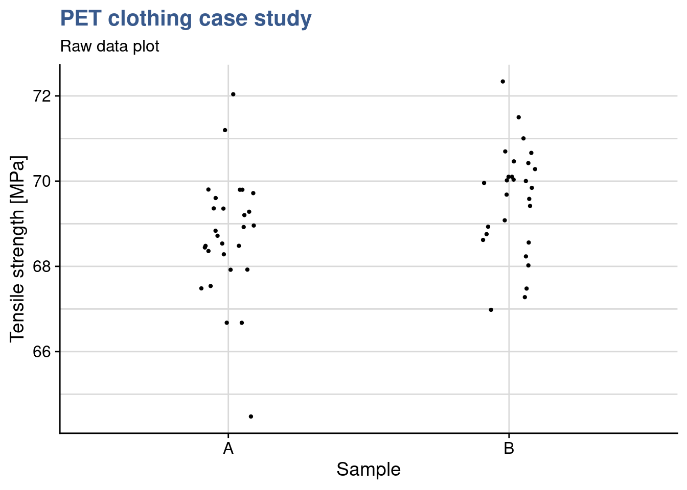
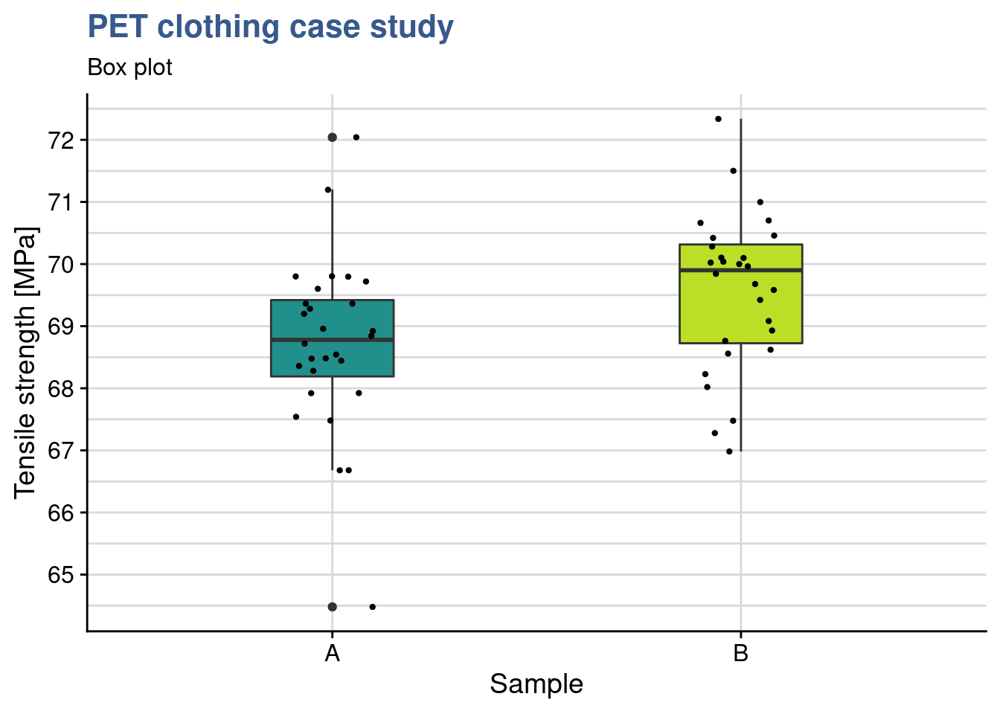

Design of Experiments
Companies manufacturing goods in industrial quantities have a permanent need to improve the features of their products. This is visible in any such industry be it car parts, watches, electronic components for cell phones, chocolates, clothing, medical devices, medicine, … the list could go on forever. As consumers we expect flawless quality at affordable price and we want to remain free to choose another brand if our confidence has been damaged due to a defective product. Adding to this fortunately the last decades have seen an increasing pressure to develop sustainable products that are responsibly sourced, meet stringent regulations and can last for many years and be properly disposable. Another constraint that can be observed in Research and Development is the growing awareness of the public on ethical issues. There is an increasing expectation that trials generate minimal waste and are done in a way respectful of test subjects human and animal.
Experiment design provides ways to meet these important requirements by making us think upfront on what is required and how to best approach a test. Integrated in a complete solid design for quality approach it can provide deep insights on the principles of a system and support decision making based on data. A well prepared test plan minimizes trial and error and reduces the number of prototypes, measurements and time required.
There are many well tested approaches, the domain is very large and our textbook can only cover a subset of the many types of DoEs used in the industry. For all these cases statistical notions are key to have a minimal preparation of the test and a valid interpretation of the results. Some statistical concepts every engineer, technician or scientist has to understand go around sampling, sample size, probability, correlation and variability. It is important to be clear about the vocabulary and the mathematics that are behind the constantly used statistics such as the mean, median, variance, standard deviation and so on. We provide a glossary and good bibliography that can be both a good starting point or a refresher. In particular the text and the case studies follow what we consider to be the most important book in this the domain, the Design and Analysis of Experiments by Montgomery (2012).
Direct comparisons
Winter Sports clothing manufacture
All winter sports clothing are virtually made with a mix of natural fibers and synthetic polymers. Upgrading to recyclable polymers while keeping performance requires extensive testing of raw material characteristics such as the tensile strength.

We start by exploring simple tests that compare results obtained in two samples. These cases happen all the time as everyone needs one moment or another to compare things. It can be the result of a test before and after an improvement, it can be two different materials applied in the same assembly or still different results obtained by different teams at different moments.
In this case, a materials engineer working in the winter sports clothing industry is working with a polymer company to develop a textile raw material based on PET for which the mean tensile strength has to be greater than 69.0 MPa. A first delivery of samples arrives, the materials laboratory measures 28 samples and reports that the test result is not meeting the contract specification. The materials engineer is informed and get hold of the raw data, in the lab system she can see the measurement summary:
summary(pet_delivery$A) Min. 1st Qu. Median Mean 3rd Qu. Max.
64.5 68.2 68.8 68.7 69.4 72.0 The mean is in fact slightly lower that the specified contract value of 69 and the materials engineer could think to confirm the rejection the batch right away. She decides nevertheless to observe how do the measurements vary. She plots the raw data on an histogram which is a very common plot showing counts for selected intervals.
Histogram
pet_spec <- 69
pet_mean <- mean(pet_delivery$A)
pet_delivery %>%
ggplot(aes(x = A)) +
geom_histogram(color = viridis(12)[4], fill = "grey90") +
scale_x_continuous(n.breaks = 10) +
geom_vline(xintercept = pet_mean, color = "darkblue", linetype = 2, size = 1) +
geom_vline(xintercept = pet_spec, color = "darkred", linetype = 2,
show.legend = TRUE) +
labs(title = "PET raw material delivery",
subtitle = "Histogram of resistance measurements",
y = "Count",
x = "Tensile strength [MPa]",
caption = "Specification min in red, Batch mean in blue¨")
She also observes a certain variability in the batch with many samples with measurements below specification getting close to 64 MPa. She remembers that in this case a t-test could help assessing if the mean that was obtained can be really be considered statistically different from the target value.
t-test one sample
t.test(x = pet_delivery$A, mu = pet_spec)
One Sample t-test
data: pet_delivery$A
t = -1.08, df = 27, p-value = 0.29
alternative hypothesis: true mean is not equal to 69
95 percent confidence interval:
68.157 69.263
sample estimates:
mean of x
68.71 The basic assumption of the test is that the mean and the reference value are identical and the alternative hypothesis is that their different. The confidence interval selected is 95% as it is common practice in the laboratory. The test result tells us that for a population average of 69, the probability of obtaining a sample with a value as extreme as 68.71 is 29% (p = 0.29). This probability value higher than the limit of 5% that she usually uses to reject the null hypothesis. In fact she cannot conclude that the sample comes from a population with a mean different than 69.
She’s not sure what to do of this result and decides asking help to a colleague statistician from R&D: has she applied the right? is the specification correctly defined or should it refer to the minimum sample value? Her colleague confirms that to compare means this is a good approach and as the standard deviation of the production is not available it is reasonable to use the standard deviation from the sample. This is an important detail that was not introduced explicitely as an argument in the R function. As we they are still in the initial steps of the new development they agree that it is a good idea to accept the batch. For the next deliveries the statistic recommends to try to improve the tensile strength average and reduce the variability. For the next delivery she also recommends to agree on a minimum sample size of 30 parts and to redo the t.test but for regular production the team should consider implementing a proper AQL protocol.
Improving recyclability while keeping current performance is no easy task. Often novel materials are expensive as their commercial volumes are small and suppliers claim a premium on their own R&D efforts. Consumers of clothing are getting more and more sensitive to waste and to recycling but they don’t always choose products with a higher price to compensate.
Following the not fully successful experience with the first delivery of recyclable PET our materials engineer considers a new chemical composition that potentially increases the levels of strength. When the second delivery arrives she establishes a simple plot with the raw data to have a first grasp of the expected improvement.
pet_delivery_long <- pet_delivery %>%
pivot_longer(
cols = everything(), names_to = "sample", values_to = "tensile_strength"
)
pet_delivery_long %>%
ggplot(aes(x = sample, y = tensile_strength)) +
geom_jitter(width = 0.1, size = 0.8) +
theme(legend.position = "none") +
labs(title = "PET clothing case study",
subtitle = "Raw data plot",
x = "Sample",
y = "Tensile strength [MPa]")
Choosing geom_jitter() instead of simply geom_point() avoids overlapping of the dots but has to used with caution as sometimes for precise reading can lead to mistakes. Dot plots also lack information sample statistics and a way to better understanding the bond distributions is to go for a box plot. This type of plot is somehow like the histogram seen before but more compact when several groups are required to be plotted.
pet_delivery_long %>%
ggplot(aes(x = sample, y = tensile_strength, fill = sample)) +
geom_boxplot(width = 0.3) +
geom_jitter(width = 0.1, size = 0.8) +
scale_fill_viridis_d(begin = 0.5, end = 0.9) +
scale_y_continuous(n.breaks = 10) +
theme(legend.position = "none") +
labs(title = "PET clothing case study",
subtitle = "Box plot",
x = "Sample",
y = "Tensile strength [MPa]")
In this case she has simply added another layer to the previous plot getting both the dots and the boxes. Now she can see the median and the quantiles. The new sample has clearly higher values and she would like to confirm if the new formulation has a significant effect. While before she was comparing the sample mean with the specification, here she wants to compare the means of the two samples. A direct calculation of this difference gives:
PET_meandiff <- mean(pet_delivery$A) - mean(pet_delivery$B)
PET_meandiff[1] -0.86286To use the t.test it is important to have samples obtained independently and randomly, to check the normality of their distributions and the equality of their variances.
To do these checks our materials engineer is using the geom_qq() function from the {ggplot} package and gets directly the normality plots for both samples in the same plot:
Normality plot
pet_delivery_long %>%
ggplot(aes(sample = tensile_strength, color = sample)) +
geom_qq() +
geom_qq_line() +
coord_flip() +
scale_color_viridis_d(begin = 0.1, end = 0.7) +
labs(title = "PET clothing case study",
subtitle = "Q-Q plot",
x = "Residuals",
y = "Tensile strength [MPa]")
We observe that for both formulation the data is adhering to the straight line thus we consider that it follows a normal distribution. We also see that both lines in the qq plot have equivalent slopes indicating that the assumption of variances is a reasonable one. Visual observations are often better supported by tests such as the variance test.
F-test
var.test(tensile_strength ~ sample, pet_delivery_long)
F test to compare two variances
data: tensile_strength by sample
F = 1.28, num df = 27, denom df = 27, p-value = 0.53
alternative hypothesis: true ratio of variances is not equal to 1
95 percent confidence interval:
0.59026 2.75635
sample estimates:
ratio of variances
1.2755 The var.test() from the {stats} package us a simple and direct way to compare variances. The F-test is accurate only for normally distributed data. Any small deviation from normality can cause the F-test to be inaccurate, even with large samples. However, if the data conform well to the normal distribution, then the F-test is usually more powerful than Levene’s test. The test null hypothesis is that the variances are equal. Since the p value is much greater than 0.05 we cannot reject the null hypotheses meaning that we can consider them equal.
Levene test
library(car)
leveneTest(tensile_strength ~ sample, data = pet_delivery_long)Levene's Test for Homogeneity of Variance (center = median)
Df F value Pr(>F)
group 1 0.01 0.91
54 We had considered the samples to be normaly distributed but we can be more conservative and use the leveneTest() function from the {car} package. In this case we get a p > 0.05 thus again we see that there is homogeneity of the variances (they do not differ significantly). Further elaborations on the variance can be found under Minitab (2019a).
The clothing sports materials engineer has now a view on the samples distribution and homogeity of variances and can apply t.test to compare the sample means. She takes care to specify the var.equal argument as TRUE (by default it is FALSE).
t-test two samples
t.test(
tensile_strength ~ sample,
data = pet_delivery_long, var.equal = TRUE
)
Two Sample t-test
data: tensile_strength by sample
t = -2.4, df = 54, p-value = 0.02
alternative hypothesis: true difference in means is not equal to 0
95 percent confidence interval:
-1.58500 -0.14072
sample estimates:
mean in group A mean in group B
68.710 69.573 She sees that p < 0.05 and confirms the means differ significantly. The test output has also provided a confidence interval for the difference between the means at 95% probability and the mean difference calculated directly of -0.86286 falls inside this interval (to be noted that zero is obviously not included in this interval). Things look promising in the new recyclable PET formulation.
Linear regression
Case study: e-bike frame hardening
Demand for electrical bicycles grows steadily and a global manufacturer is looking into improving the quality of his bicycle frames. A test program around different treatment temperatures is established to find the conditions that optimize the fatigue resistance.

A way to go beyond the statistical description of samples and direct comparison between different tests it is to establish a model. Models help us simplify the reality and draw general conclusions. The case studies in this unit introduce linear models and their applications. They also serve as the backbone for statistical inference and forecasting. These are two important techniques because they provide mathematical evidence of such general conclusions in a context where the test quantities are strongly limited as for example in lifecycle testing of expensive mechanical parts.
Mountain bikes frames are submitted to many different efforts, namely bending, compression and vibration. Obviously no one expects a bike frame to break in regular usage and it is hard to commercialy claim resistance to failure as a big thing. Nevertheless on the long term a manufacturer reputation is made on performance features such as the number of cycles of effort that the frame resists. An e-bike manufacturing company is looking to increase the duration of its frames by improving the e-bike frame hardening process.
A test has been run with 5 groups of 30 bike frames submitted to 4 different treatment temperature levels and the data collected in the R tibble ebike_hardening presented below:
head(ebike_hardening) %>%
kable(align = "c")| temperature | g1 | g2 | g3 | g4 | g5 |
|---|---|---|---|---|---|
| 160 | 575000 | 542000 | 530000 | 539000 | 570000 |
| 180 | 565000 | 593000 | 590000 | 579000 | 610000 |
| 200 | 600000 | 651000 | 610000 | 637000 | 629000 |
| 220 | 725000 | 700000 | 715000 | 685000 | 710000 |
This type of two way entry is friendly for data collection but for manipulation with the {tidyverse} package functions it is often better to transform it in a long format.
ebike_narrow <- ebike_hardening %>%
pivot_longer(
cols = starts_with("g"),
names_to = "observation",
values_to = "cycles"
) %>%
group_by(temperature) %>%
mutate(cycles_mean = mean(cycles)) %>%
ungroup()
slice_head(.data = ebike_narrow, n = 5) %>%
kable(align = "c",
caption = "e-bike hardening experiment data")| temperature | observation | cycles | cycles_mean |
|---|---|---|---|
| 160 | g1 | 575000 | 551200 |
| 160 | g2 | 542000 | 551200 |
| 160 | g3 | 530000 | 551200 |
| 160 | g4 | 539000 | 551200 |
| 160 | g5 | 570000 | 551200 |
The engineering team is looking forward to see the first results which have been prepared by the laboratory supervisor. He has prepared a series of plots and data models and sent out an draft report. The first plot is a simple dot plot having the raw data and in red the group means.
ggplot(data = ebike_narrow) +
geom_point(aes(x = temperature, y = cycles)) +
geom_point(aes(x = temperature, y = cycles_mean), color = "red") +
scale_y_continuous(n.breaks = 10, labels = label_number(big.mark = "'")) +
theme(legend.position = "none") +
labs(title = "e-bike frame hardening process",
subtitle = "Raw data plot",
x = "Furnace Temperature [°C]",
y = "Cycles to failure [n]")
Clearly the highest the furnace temperature the higher the number of cycles to failure. This is absolutely expected as higher temperatures, up to a certain level, allow to release mechanical tensions and make the material less prone to fracture. The team knows that other factors are at play such as the treatment duration, the pre-heating temperature and many others related with the welding of the frame parts, but has deliberately decided to look only into the temperature due to time constraints related with a new bike launch.
Linear model
ebike_lm <- lm(cycles ~ temperature, data = ebike_narrow)
summary(ebike_lm)
Call:
lm(formula = cycles ~ temperature, data = ebike_narrow)
Residuals:
Min 1Q Median 3Q Max
-43020 -12325 -1210 16710 33060
Coefficients:
Estimate Std. Error t value Pr(>|t|)
(Intercept) 137620 41211 3.34 0.0036 **
temperature 2527 215 11.73 7.3e-10 ***
---
Signif. codes: 0 '***' 0.001 '**' 0.01 '*' 0.05 '.' 0.1 ' ' 1
Residual standard error: 21500 on 18 degrees of freedom
Multiple R-squared: 0.884, Adjusted R-squared: 0.878
F-statistic: 138 on 1 and 18 DF, p-value: 7.26e-10This last code chunk in lab supervisor draft report is a linear model built with the variable temperature as a numeric vector. The R summary() function produces a specific output for linear models and a dedicated help explaining each output value can be accessed with ?summary.lm. Knowing that R uses specific “methods” to provide the summaries for many functions is useful to find their help pages and a way to list them is apropos("summary).
In this case we see a high R-squared suggesting a very good fit and that the temperature is significant by looking at the 3 significance stars next to its p-value. It is good to complement the raw data plot with a regression line corresponding to this linear model as done in the next chunk with the function geom_smooth():
ggplot(ebike_narrow) +
geom_point(aes(x = temperature, y = cycles)) +
geom_smooth(aes(x = temperature, y = cycles), method = "lm") +
geom_point(aes(x = temperature, y = cycles_mean), color = "red") +
scale_y_continuous(n.breaks = 10, labels = label_number(big.mark = "'")) +
theme(legend.position = "none") +
labs(title = "e-bike frame hardening process",
subtitle = "Raw data plot",
x = "Furnace Temperature [°C]",
y = "Cycles to failure [n]")
The engineering team has selected to specify and control the temperature variable at specific levels in what is called a fixed effects model, limiting the conclusions to the levels tested. The lab supervisor updates his model by converting the temperature variable to a factor and establishes again the linear model. He explicitly introduces the argument contrasts as cont.treatment to make clear that this was his option. In principle this is not needed because this is default setting for the contrasts as seen with getOption("contrasts").
ebike_factor <- ebike_narrow %>%
mutate(temperature = as_factor(temperature))
ebike_lm_factor <- lm(
cycles ~ temperature,
data = ebike_factor,
contrasts = list(temperature = "contr.treatment")
)
summary(ebike_lm_factor)
Call:
lm(formula = cycles ~ temperature, data = ebike_factor, contrasts = list(temperature = "contr.treatment"))
Residuals:
Min 1Q Median 3Q Max
-25400 -13000 2800 13200 25600
Coefficients:
Estimate Std. Error t value Pr(>|t|)
(Intercept) 551200 8170 67.47 < 2e-16 ***
temperature180 36200 11553 3.13 0.0064 **
temperature200 74200 11553 6.42 8.4e-06 ***
temperature220 155800 11553 13.49 3.7e-10 ***
---
Signif. codes: 0 '***' 0.001 '**' 0.01 '*' 0.05 '.' 0.1 ' ' 1
Residual standard error: 18300 on 16 degrees of freedom
Multiple R-squared: 0.926, Adjusted R-squared: 0.912
F-statistic: 66.8 on 3 and 16 DF, p-value: 2.88e-09Contrasts
We saw that from the first model to the second the R-squared has slightly improved and model coefficients are slightly different. In R the model coefficients depend on the variable variable data type. To obtain equivalent results with the different type coding it is necessary to carefully set the model contrasts. Lets see the contrasts for the two models established:
ebike_lm$contrasts$temperatureNULLebike_lm_factor$contrasts$temperature[1] "contr.treatment"Factor type coding and contrasts definition lead to different linear regression equations with different coefficients. It is important to use common sense and attention before using whatever output the system is giving us. We can see the coefficients and use them to calculate the output with a matrix multiplication as follows:
ebike_lm$coefficients (Intercept) temperature
137620 2527 ebike_lm$coefficients %*% c(1, 180) [,1]
[1,] 592480this shows that to calculate the output for an input of 180 we have 137’620 + 180 x 2’527 = 592’480. On the other hand, when the temperature is coded as a factor we have the following coefficients and output calculation:
ebike_lm_factor$coefficients (Intercept) temperature180 temperature200 temperature220
551200 36200 74200 155800 ebike_lm_factor$coefficients %*% c(1, 1, 0, 0) [,1]
[1,] 587400The output is slightly different corresponding to 551’200 + 1 x 36’200 = 587’400. More on this in the next section.
Predict
A model is useful for predictions. In a random effects model where conclusions can be applied to the all the population we can predict values at any value of the input variables. In that case reusing the model with temperature as a numeric vector we could have a prediction for various temperature values such as:
ebike_new <- tibble(temperature = c(180, 200, 210))
predict(ebike_lm, newdata = ebike_new) 1 2 3
592480 643020 668290 We can see that the prediction at the tested levels is slightly different from the measured averages at those levels. This is because the linear regression line is not passing exactly by the averages. Anyway in our case the team has selected a fixed effects model and we can only take conclusions at the levels at which the input was tested. We can check that the predictions correspond exactly to the averages we’ve calculated for each level:
ebike_new <- data.frame(temperature = as_factor(c("180", "200")))
predict(ebike_lm_factor, newdata = ebike_new) 1 2
587400 625400 We find again exactly the same values calculated using the matrix multiplication of the linear regression coefficients with the input vector we used before. The predict() function has other advantages such as providing confidence intervals and taking into account the correct contrast coding, which will be explored in later case studies.
The lab supervisor is now ready to assess the validity of the model. This is required before entering the main objective which is comparing the treatment means using an anova. To do this assessment the model he is going to do a residuals analysis. R provides direct plotting functions with the base and stats packages but he opted to break down the analysis and use custom the plots. He also uses some additional statistical tests to confirm our observations from the plots. He starts by loading the package broom which will help him retrieving the data from the lm object into a data frame.
Model augment
library(broom)ebike_aug <- augment(ebike_lm_factor) %>%
mutate(index = row_number())
ebike_aug %>%
head() %>%
kable(align = "c")| cycles | temperature | .fitted | .resid | .hat | .sigma | .cooksd | .std.resid | index |
|---|---|---|---|---|---|---|---|---|
| 575000 | 160 | 551200 | 23800 | 0.2 | 17571 | 0.13261 | 1.45665 | 1 |
| 542000 | 160 | 551200 | -9200 | 0.2 | 18679 | 0.01982 | -0.56307 | 2 |
| 530000 | 160 | 551200 | -21200 | 0.2 | 17846 | 0.10522 | -1.29752 | 3 |
| 539000 | 160 | 551200 | -12200 | 0.2 | 18535 | 0.03485 | -0.74668 | 4 |
| 570000 | 160 | 551200 | 18800 | 0.2 | 18069 | 0.08275 | 1.15063 | 5 |
| 565000 | 180 | 587400 | -22400 | 0.2 | 17724 | 0.11747 | -1.37096 | 6 |
A deep structural change has happened in R since the {tidyverse}. The original S and R creators had developed a language where matrices, vectors, lists and dataframes had equivalent importance. The output of a function was often a list with a specific S3 class comprising other vectors and data.frames inside. This allowed to use in a transparent way generic functions such as summary() to produce tailor made outputs because a method was working underneath. We’ve just seen an example of this with the lm() summary in the beginning of this case. For the plot() function there are more than a hundred different automatic plots as seens with apropos("plot"). This is a very important difference as in the {tidyverse} we add layers to obtain the required plot. On the data side since {tidyverse} has been introduced we’ve seen an increasing importance of the dataframe, now replaced by the tibble. The agument() does exactly this, extracts the coefficients, residuals and other data from the model and stores it in a tibble format. This has the advantage of making it easier to integrate these functions with the other {tidyverse} functions and pipelines while still allowing to keep the methods approach. An interesting reading on this co-existance is available under tideness-modeling
Timeseries plot
ebike_aug %>%
ggplot(aes(x = index, y = .resid)) +
geom_point() +
scale_y_continuous(n.breaks = 10, labels = label_number(big.mark = "'")) +
labs(
title = "e-bike frame hardening process",
subtitle = "Linear model - Residuals timeseries",
y = "Index",
x = "Fitted values"
)
Before drawing conclusions on the significance of the input variables it is important to assess the validity of the model. The anova assumptions are similar to the t.test assumptions discussed before. In fact the anova can be considered extension of the t.test to factors with more than 2 levels. These assumptions are the common ones commining from statistical inference principles and the central limit theorem: independent and random samples, normality of the distributions, equality of variances. These assumptions could be checked in each variable group but this would be very time consuming and not fully robust. A better way is to analyse the model residuals which are the deviations of each datapoint from the linear regression line.
A first verification consists in confirming that the residuals have no patterns. This confirms that the sampling has been done randomly and there are none of the typical bias consisting in groups of values clustered from one operator the other or from one day to the other. This can be achieved with a residuals timeseries. If patterns emerge then there may be correlation in the residuals.
For this plot we need to ensure that the order of plotting in the x axis corresponds exactly to the original data collection order. In this case the lab supervisor confirms that no specific pattern emerges from the current plot and the design presents itself well randomised.
Autocorrelation test
library(car)
durbinWatsonTest(ebike_lm_factor) lag Autocorrelation D-W Statistic p-value
1 -0.53433 2.9609 0.12
Alternative hypothesis: rho != 0As already stated visual observations can most of the times be complemented with a statistical test. In this case we can apply the durbinWatson test from the {car} package (Car stands for Companion to Applied Regression)
Although the output shows Autocorrelation of -0.53 we have to consider that the p value is slightly higher than 0.05 thus there is not enough significance to say that there is autocorrelation. The result is not a complete clear cut the lab supervisor remains alert for coming verifications.
Normality plot
ebike_aug %>%
ggplot(aes(sample = .resid)) +
geom_qq() +
geom_qq_line() +
scale_y_continuous(n.breaks = 10, labels = label_number(big.mark = "'")) +
labs(
title = "e-bike frame hardening process",
subtitle = "Linear model - qq plot",
y = "Residuals",
x = "Fitted values"
)
A good next check is to verify that the residuals are normaly distributed. As the sample size is relatively small it is better to use a qq plot instead of an histogram to assess the normality of the residuals. As we see on the plot values adhere to the straight line indicating an aproximately normal distribution. In the fixed effects model we give more importance to the center of the values and here we consider acceptable that the extremes of the data tend to bend away from the straight line. This verification can be completed by a normality test.
Normality test
shapiro.test(ebike_aug$.resid)
Shapiro-Wilk normality test
data: ebike_aug$.resid
W = 0.938, p-value = 0.22For populations < 50 use the shapiro-wilk normality test, Here p > 0.05 indicates that the residuals do not differ significantly from a normally distributed population.
Residuals-Fit plot
ebike_aug %>%
ggplot(aes(x = .fitted, y = .resid)) +
geom_point() +
geom_smooth(method = stats::loess, se = FALSE, color = "red") +
scale_y_continuous(n.breaks = 10, labels = label_number(big.mark = "'")) +
labs(
title = "e-bike frame hardening process",
subtitle = "Linear model - Residuals vs Fitted values",
y = "Residuals",
x = "Fitted values"
)
If the model is correct and the assumptions hold, the residuals should be structureless. In particular they should be unrelated to any other variable including the predicted response. A plot of the residuals against the fitted values should reveal such structures. In this plot we see no variance anomalies such as a higher variance for a certain factor level or other types of skweness.
Homocedasticity
bartlett.test(cycles ~ temperature, data = ebike_factor)
Bartlett test of homogeneity of variances
data: cycles by temperature
Bartlett's K-squared = 0.433, df = 3, p-value = 0.93A complement to the residuals-fit plot is the equality of variances test. Tests for variance comparison have been introduced in the Direct Comparisons case studies but the var.test() cannot be used here. Here we have more than two levels for which the Bartlett test is most suited. The normal distribution of the residuals has already been confirmed. This test is sensitive to the normality assumption, consequently, when the validity of this assumption is doubtful, it should not be used and be replaced by the modified Levene test for example. Applying the test we obtain a p-value is P = 0.93 meaning we cannot reject the null hypothesis. In statistical terms, there is no evidence to counter the claim that all five variances are the same. This is the same conclusion reached by analyzing the plot of residuals versus fitted values.
Standard Residuals-Fit plot
ebike_aug %>%
ggplot(aes(x = .fitted, y = abs(.std.resid))) +
geom_point() +
geom_smooth(method = stats::loess, se = FALSE, color = "red") +
labs(title = "e-bike frame hardening process",
subtitle = "Linear model - Standardised Residuals vs Fitted values",
y = "Standardised Residuals",
x = "Fitted values")
This Standardized residuals plot helps detecting outliers in the residuals (any residual > 3 standard deviations is a potential outlier). The plot shows no outliers to consider in this DOE.
Outliers test
outlierTest(ebike_lm_factor)No Studentized residuals with Bonferroni p < 0.05
Largest |rstudent|:
rstudent unadjusted p-value Bonferroni p
12 1.6488 0.11997 NAIn a case where we were doubtfull we could go further and make a statistical test to assess if a certain value was an outlier. Another usefull test is available in the {car} package in this case to test outliers. We get a Bonferroni adjusted p value as NA confirming that there is no outlier in the data.
Cooks distance
ebike_aug %>%
ggplot(aes(x = index, y = .cooksd)) +
geom_col(color = viridis(12)[4], fill = "grey90") +
geom_hline(yintercept = 1, color = "red") +
labs(title = "e-bike frame hardening process",
subtitle = "Residuals vs Leverage",
x = "Observation",
y = "Cooks distance")
Cooks distance is a complementary analysis to the residuals that can help identify specific data points that could have a strong influence in the model. Various cutoff points are suggested in the literature and we opted here for 1 following the short wikipedia article on the topic cooks distance
R-squared
summary(ebike_lm_factor)$r.squared[1] 0.92606A final input in the draft report of the ebike hardnening linear model is the R-squared. When looking into the results the engineering team is suspicious. A model with such a good fit should raise questions. R-squared gives an indication of the quality of the model. In this case 93% of the output is explained by input. Our lab supervisor is also not confortable the residuals analysis has not shown any evidence of something wrong with the model so he decides to quickly calculate it “by hand.” He knows that the R-squared, or coefficient of determination is obtained from the ratio between the residuals variance and the output variable variance showing exactly the proportion between the two and he gets its straight away from R using the data already available:
ebike_aug %>%
summarise(cycles_var = var(cycles), residuals_var = var(.resid)) %>%
mutate(Rsquared = 1 - residuals_var/cycles_var) %>% pull(Rsquared)[1] 0.92606Remembering the original linear regression plot from the begining of the report he accepts this must not be so far away. It was clear that the temperature had a strong impact on the number of cycles and the variability for each level was small in the end. He accepts to leave as it is for now waiting for upcoming analysis of variance to see additional details.
Anova & Ancova
We can also compare medians and get a sense of the effect of the treatment levels by looking into the box plot:
ggplot(ebike_factor,
aes(x = temperature, y = cycles, fill = temperature)) +
geom_boxplot() +
scale_fill_viridis_d(option = "D", begin = 0.5) +
scale_y_continuous(n.breaks = 10, labels = label_number(big.mark = "'")) +
theme(legend.position = "none") +
labs(title = "e-bike frame hardening process",
subtitle = "Raw data plot",
x = "Furnace Temperature [°C]",
y = "Cycles to failure [n]")
1 factor with severals levels + 1 continuous dependent variable Similar to the t-test but extended - this test allows to compare the means between several levels of treatement for a continuous response variable (the t test is only 2 levels at a time, performing all pair wise t-tests would also not be a solution because its a lot of effort and would increase the type I error)
ANOVA principle: the total variability in the data, as measured by the total corrected sum of squares, can be partitioned into a sum of squares of the differences between the treatment averages and the grand average plus a sum of squares of the differences of observations within treatments from the treatment average
Aov
In R the anova is built by passing the linear model to the anova or aov functions. The output of the anova function is just the anova table as shown here for this first example. The output of the aov function is a list.
ebike_aov_factor <- aov(ebike_lm_factor)
summary(ebike_aov_factor) Df Sum Sq Mean Sq F value Pr(>F)
temperature 3 6.69e+10 2.23e+10 66.8 2.9e-09 ***
Residuals 16 5.34e+09 3.34e+08
---
Signif. codes: 0 '***' 0.001 '**' 0.01 '*' 0.05 '.' 0.1 ' ' 1Note that the RF temperature or between-treatment mean square (22,290.18) is many times larger than the within-treatment or error mean square (333.70). This indicates that it is unlikely that the treatment means are equal. Also p < 0.05 thus we can reject the null hypothesis and conclude that the means are significantly different.
Anova on plasma etching, modification of the example to achieve a p > 0.05:
ebike_narrow2 <- ebike_hardening2 %>%
pivot_longer(
cols = starts_with("g"),
names_to = "observation",
values_to = "cycles"
) %>%
group_by(temperature) %>%
mutate(cycles_mean = mean(cycles)) %>%
ungroup()
ebike_factor2 <- ebike_narrow2
ebike_factor2$temperature <- as.factor(ebike_factor2$temperature)
ebike_lm_factor2 <- lm(cycles ~ temperature, data = ebike_factor2)
anova(ebike_lm_factor2)Analysis of Variance Table
Response: cycles
Df Sum Sq Mean Sq F value Pr(>F)
temperature 3 1.48e+09 4.92e+08 1.2 0.34
Residuals 16 6.55e+09 4.10e+08 ggplot(ebike_factor2,
aes(x = temperature, y = cycles, fill = temperature)) +
geom_boxplot() +
scale_y_continuous(n.breaks = 10) +
scale_fill_viridis_d(option = "A", begin = 0.5) +
theme(legend.position = "none") +
scale_y_continuous(n.breaks = 10, labels = label_number(big.mark = "'")) +
labs(title = "e-bike frame hardening process",
subtitle = "Boxplot of frame aging resistance",
x = "Furnace Temperature [°C]",
y = "Cycles to failure [n]")
P > 0.05 - there is no significant difference between the means
Pairwise comparison
The Anova may indicate that the treament means differ but it won’t indicate which ones. In this case we may want to compare pairs of means.
ebike_tukey <- TukeyHSD(ebike_aov_factor, ordered = TRUE)head(ebike_tukey$temperature) %>%
kable(align = "c",
caption = "tukey test on e-bike frame hardening process",
booktabs = T)| diff | lwr | upr | p adj | |
|---|---|---|---|---|
| 180-160 | 36200 | 3145.6 | 69254 | 0.02943 |
| 200-160 | 74200 | 41145.6 | 107254 | 0.00005 |
| 220-160 | 155800 | 122745.6 | 188854 | 0.00000 |
| 200-180 | 38000 | 4945.6 | 71054 | 0.02160 |
| 220-180 | 119600 | 86545.6 | 152654 | 0.00000 |
| 220-200 | 81600 | 48545.6 | 114654 | 0.00001 |
The test provides us a simple direct calculation of the differences between the treatment means and a confidence interval for those. Most importantly it provides us with the p value to help us confirm the significance of the difference and conclude factor level by factor level which differences are significant.
Additionally we can obtain the related plot with the confidence intervals
plot(ebike_tukey)
Least significant difference
Fisher’s Least Significant difference is an alternative to Tuckey’s test.
library(agricolae)ebike_anova <- anova(ebike_lm_factor)
ebike_LSD <- LSD.test(y = ebike_factor$cycles,
trt = ebike_factor$temperature,
DFerror = ebike_anova$Df[2],
MSerror = ebike_anova$`Mean Sq`[2],
alpha = 0.05)The Fisher procedure provides us with additional information. A first outcome is the difference between means (of life cycles) that can be considered significant, indicated in the table below by LSD = 24.49.
head(ebike_LSD$statistics) %>%
kable(align = "c",
caption = "Fisher LSD procedure on e-bike frame hardening: stats",
booktabs = T)| MSerror | Df | Mean | CV | t.value | LSD | |
|---|---|---|---|---|---|---|
| 333700000 | 16 | 617750 | 2.9571 | 2.1199 | 24492 |
Furthermore it gives us a confidence interval for each treatment level mean:
head(ebike_LSD$means) %>%
# as_tibble() %>%
rename(cycles = `ebike_factor$cycles`) %>%
select(-Min, -Max, -Q25, -Q50, -Q75) %>%
kable(align = "c",
caption = "Fisher LSD procedure on e-bike frame hardening: means",
booktabs = T)| cycles | std | r | LCL | UCL | |
|---|---|---|---|---|---|
| 160 | 551200 | 20017 | 5 | 533882 | 568518 |
| 180 | 587400 | 16742 | 5 | 570082 | 604718 |
| 200 | 625400 | 20526 | 5 | 608082 | 642718 |
| 220 | 707000 | 15248 | 5 | 689682 | 724318 |
We can see for example that for temperature 220 °C the etch rate if on average 707.0 with a probability of 95% of being between 689.7 and 724.3 A/min.
Another interesting outcome is the grouping of levels for each factor:
head(ebike_LSD$groups) %>%
kable(align = "c",
caption = "Fisher LSD procedure on e-bike frame hardening: groups",
booktabs = T)| ebike_factor$cycles | groups | |
|---|---|---|
| 220 | 707000 | a |
| 200 | 625400 | b |
| 180 | 587400 | c |
| 160 | 551200 | d |
In this case as all level means are statistically different they all show up in separate groups, each indicated by a specific letter.
Finally we can get from this package a plot with the Least significant difference error bars:
plot(ebike_LSD)
And below we’re exploring a manual execution of this type of plot (in this case with the standard deviations instead).
ebike_factor %>%
group_by(temperature) %>%
summarise(cycles_mean = mean(cycles),
cycles_sd = sd(cycles)) %>%
ggplot(aes(x = temperature, y = cycles_mean)) +
geom_point(size = 2) +
geom_line() +
geom_errorbar(aes(ymin = cycles_mean - cycles_sd,
ymax = cycles_mean + cycles_sd),
width = .1) +
scale_y_continuous(n.breaks = 10, labels = label_number(big.mark = "'")) +
# scale_color_viridis_d(option = "C", begin = 0.1, end = 0.9) +
annotate(geom = "text", x = Inf, y = -Inf, label = "Error bars are +/- 1xSD",
hjust = 1, vjust = -1, colour = "grey30", size = 3,
fontface = "italic") +
labs(title = "e-bike frame hardening process",
subtitle = "Boxplot of frame aging resistance",
x = "Furnace Temperature [°C]",
y = "Cycles to failure [n]")
As often with statistical tools, there is debate on the best approach to use. We recommend to combine the Tukey test with the Fisher’s LSD completementary R functions. The Tukey test giving a first indication of the levels that have an effect and calculating the means differences and the Fisher function to provide much more additional information on each level. To be considered in each situation the slight difference between the significance level for difference between means and to decide if required to take the most conservative one.
To go further in the Anova F-test we recommend this interesting article from Minitab (2016).
Two factors multiple levels
The solarcell output test

Load and prepare data for analysis:
solarcell_factor <- solarcell_output %>%
pivot_longer(
cols = c("T-10", "T20", "T50"),
names_to = "temperature",
values_to = "output"
) %>% mutate(across(c(material, temperature), as_factor))Model formulae
solarcell_formula <- output ~ temperature + material + temperature:material
class(solarcell_formula)[1] "formula"solarcell_factor_lm <- lm(
formula = solarcell_formula,
data = solarcell_factor
)
summary(solarcell_factor_lm)
Call:
lm(formula = solarcell_formula, data = solarcell_factor)
Residuals:
Min 1Q Median 3Q Max
-60.75 -14.63 1.38 17.94 45.25
Coefficients:
Estimate Std. Error t value Pr(>|t|)
(Intercept) 134.75 12.99 10.37 6.5e-11 ***
temperatureT20 -77.50 18.37 -4.22 0.00025 ***
temperatureT50 -77.25 18.37 -4.20 0.00026 ***
materialchristaline 21.00 18.37 1.14 0.26311
materialmultijunction 9.25 18.37 0.50 0.61875
temperatureT20:materialchristaline 41.50 25.98 1.60 0.12189
temperatureT50:materialchristaline -29.00 25.98 -1.12 0.27424
temperatureT20:materialmultijunction 79.25 25.98 3.05 0.00508 **
temperatureT50:materialmultijunction 18.75 25.98 0.72 0.47676
---
Signif. codes: 0 '***' 0.001 '**' 0.01 '*' 0.05 '.' 0.1 ' ' 1
Residual standard error: 26 on 27 degrees of freedom
Multiple R-squared: 0.765, Adjusted R-squared: 0.696
F-statistic: 11 on 8 and 27 DF, p-value: 9.43e-07Looking at the output we see that R-squared is equal to 0.7652. This means about 77 percent of the variability in the battery life is explained by the plate material in the battery, the temperature, and the material type–temperature interaction. We’re going to go more in details now to validate the model and understand the effects and interactions of the different factors.
Interaction plot
In this experiement instead of just plotting a linear regression we need to go for a more elaborate plot that shows the response as a function of the two factors. Many different approaches are possible in R and here we’re starting with a rather simple one - the interaction plot from the stats package:
interaction.plot(x.factor = solarcell_factor$temperature,
trace.factor = solarcell_factor$material,
fun = mean,
response = solarcell_factor$output,
trace.label = "Material",
legend = TRUE,
main = "Temperature-Material interaction plot",
xlab = "temperature [°C]",
ylab = "output [kWh/yr equivalent]")
Although simple many important learnings can be extracted from this plot. We get the indication of the mean value of battery life for the different data groups at each temperature level for each material. Also we see immediatly that batteries tend to have longer lifes at lower temperature for all material types. We also see that there is certainly an interaction between material and temperature as the lines cross each other.
We do now a quick assessment of the residuals, starting by the timeseries of residuals:
Simplified timeseries
plot(solarcell_factor_lm$residuals)
No specific pattern is apparent so now we check all the remaining plots grouped into one single output:
Residuals summary
par(mfrow = c(2,2))
plot(solarcell_factor_lm)
Residuals versus fit presents a rather simetrical distribution around zero indicating equality of variances at all levels and the qq plot presents good adherence to the centel line indicating a normal distributed population of residuals, all ok for these. The scale location plot though, shows a center line that is not horizontal which suggest the presence of outliers.
Cooks histogram
plot(solarcell_factor_lm, which = 4)
We can extract the absolute maximum residual with:
solarcell_factor_lm$residuals %>% abs() %>% max()[1] 60.75Inspecting again the residuals plots we see that this corresponds to the point labeled with 2 for which the standardized value is greater than 2 standard deviations.
We’re therefore apply the outlier test from the car package:
library(car)outlierTest(solarcell_factor_lm)No Studentized residuals with Bonferroni p < 0.05
Largest |rstudent|:
rstudent unadjusted p-value Bonferroni p
4 -3.1004 0.0046065 0.16583which gives a high Bonferroni p value thus excluding this possibility.
As the R-squared was rather high and there were no issues with residuals we considere the model as acceptable and move ahead with the assessment of the significance of the different effects. For that we apply the anova to the linear model:
Anova check
anova(solarcell_factor_lm)Analysis of Variance Table
Response: output
Df Sum Sq Mean Sq F value Pr(>F)
temperature 2 39119 19559 28.97 1.9e-07 ***
material 2 10684 5342 7.91 0.002 **
temperature:material 4 9614 2403 3.56 0.019 *
Residuals 27 18231 675
---
Signif. codes: 0 '***' 0.001 '**' 0.01 '*' 0.05 '.' 0.1 ' ' 1We see in the output little stars in front of the p value of the different factors. Three stars for temperature corresponding to an extremely low p value indicating that the means of the lifetime at different levels of temperature are significantly different, confirming that temperature has an effect on lifetime. With a lower significance but still clearly impacting lifetime depends on the material. Finally it is confirmed that there is an interaction between both factors has the temperature:material term has a p value of 0.01861 which us lower than the treshold of 0.05.
The interaction here corresponds to the fact that increasing temperature from 15 to 70 decreases lifetime for material 2 but increases for material 3.
Its interesting to consider what would have been the analysis if the interaction was not put in the model. We can easily assess that by creating a new model in R without the temperature:material term.
solarcell_factor_lm_no_int <- lm(
output ~ temperature + material, data = solarcell_factor)
summary(solarcell_factor_lm_no_int)
Call:
lm(formula = output ~ temperature + material, data = solarcell_factor)
Residuals:
Min 1Q Median 3Q Max
-54.39 -21.68 2.69 17.22 57.53
Coefficients:
Estimate Std. Error t value Pr(>|t|)
(Intercept) 122.5 11.2 10.97 3.4e-12 ***
temperatureT20 -37.2 12.2 -3.04 0.0047 **
temperatureT50 -80.7 12.2 -6.59 2.3e-07 ***
materialchristaline 25.2 12.2 2.06 0.0482 *
materialmultijunction 41.9 12.2 3.43 0.0017 **
---
Signif. codes: 0 '***' 0.001 '**' 0.01 '*' 0.05 '.' 0.1 ' ' 1
Residual standard error: 30 on 31 degrees of freedom
Multiple R-squared: 0.641, Adjusted R-squared: 0.595
F-statistic: 13.9 on 4 and 31 DF, p-value: 1.37e-06The model still presents a reasonably high R-square of 0.64. We now apply the anova on this new model:
anova(solarcell_factor_lm_no_int)Analysis of Variance Table
Response: output
Df Sum Sq Mean Sq F value Pr(>F)
temperature 2 39119 19559 21.78 1.2e-06 ***
material 2 10684 5342 5.95 0.0065 **
Residuals 31 27845 898
---
Signif. codes: 0 '***' 0.001 '**' 0.01 '*' 0.05 '.' 0.1 ' ' 1The output naturally confirms the significance of the effects of the factors, however, as soon as a residual analysis is performed for these data, it becomes clear that the non-interaction model is inadequate:
par(mfrow = c(2,2))
plot(solarcell_factor_lm_no_int)
We see in the Residuals vs Fitted a clear pattern with residuals moving from positive to negative and then again to positive along the fitted values axis which indicates that there is an interaction at play.
Covariance
We assess here the potential utilisation of the analysis of covariance (ancova) in situations where a continuous variable may be influencing the measured value. This technique complements the analysis of variance (anova) allowing for a more accurate assessment of the effects of the categorical variables.
Below a description of the approach taken from (Montgomery 2012), pag.655:
Suppose that in an experiment with a response variable y there is another variable, say x, and that y is linearly related to x. Furthermore, suppose that x cannot be controlled by the experimenter but can be observed along with y. The variable x is called a covariate or concomitant variable. The analysis of covariance involves adjusting the observed response variable for the effect of the concomitant variable.
If such an adjustment is not performed, the concomitant variable could inflate the error mean square and make true differences in the response due to treatments harder to detect. Thus, the analysis of covariance is a method of adjusting for the effects of an uncontrollable nuisance variable. As we will see, the procedure is a combination of analysis of variance and regression analysis.
As an example of an experiment in which the analysis of covariance may be employed, consider a study performed to determine if there is a difference in the strength of a monofilament fiber produced by three different machines. The data from this experiment are shown in Table 15.10 (below). Figure 15.3 presents a scatter diagram of strength (y) versus the diameter (or thickness) of the sample. Clearly, the strength of the fiber is also affected by its thickness; consequently, a thicker fiber will generally be stronger than a thinner one. The analysis of covariance could be used to remove the effect of thickness (x) on strength (y) when testing for differences in strength between machines.
solarcell_fill %>%
kable()| material | output | fillfactor |
|---|---|---|
| multijunction_A | 108 | 20 |
| multijunction_A | 123 | 25 |
| multijunction_A | 117 | 24 |
| multijunction_A | 126 | 25 |
| multijunction_A | 147 | 32 |
| multijunction_B | 120 | 22 |
| multijunction_B | 144 | 28 |
| multijunction_B | 117 | 22 |
| multijunction_B | 135 | 30 |
| multijunction_B | 132 | 28 |
| multijunction_C | 105 | 21 |
| multijunction_C | 111 | 23 |
| multijunction_C | 126 | 26 |
| multijunction_C | 102 | 21 |
| multijunction_C | 96 | 15 |
Below a plot of strenght by thickness:
solarcell_fill %>%
ggplot(aes(x = fillfactor, y = output)) +
geom_point() +
geom_smooth(method = "lm", se = FALSE) +
theme_industRial() +
labs(
title = "The solarcell output test",
subtitle = "Output vs Fill Factor",
x = "Fill factor [%]",
y = "Output"
)
Correlation test
And a short test to assess the strenght of the correlation:
library(stats)
cor.test(solarcell_fill$output, solarcell_fill$fillfactor)
Pearson's product-moment correlation
data: solarcell_fill$output and solarcell_fill$fillfactor
t = 9.8, df = 13, p-value = 2.3e-07
alternative hypothesis: true correlation is not equal to 0
95 percent confidence interval:
0.82100 0.97976
sample estimates:
cor
0.93854 Going further and using the approach from (Broc 2016) I’m faceting the scatterplots to assess if the coefficient of the linear regression is similar for all the levels of the machine factor:
solarcell_fill %>%
ggplot(aes(x = fillfactor, y = output)) +
geom_point() +
geom_smooth(method = "lm", se = FALSE) +
facet_wrap(vars(material)) +
theme_industRial() +
labs(
title = "The solarcell output test",
subtitle = "Output vs Fill Factor, by material type",
x = "Fill factor [%]",
y = "Output"
)
Visually this is the case, going from one level to the other is not changing the relationship between thickness and strenght - increasing thickness increases stenght. Visually the slopes are similar but the number of points is small. In a real case this verification could be extended with the correlation test for each level or/and a statistical test between slopes.
We’re now reproducing in R the ancova case study from the book, still using the aov function. The way to feed the R function arguments is obtained from https://www.datanovia.com/en/lessons/ancova-in-r/
Three different machines produce a monofilament fiber for a textile company. The process engineer is interested in determining if there is a difference in the breaking strength of the fiber produced by the three machines. However, the strength of a fiber is related to its diameter, with thicker fibers being generally stronger than thinner ones. A random sample of five fiber specimens is selected from each machine.
Ancova
solarcell_ancova <- aov(
output ~ fillfactor + material, solarcell_fill
)
summary(solarcell_ancova) Df Sum Sq Mean Sq F value Pr(>F)
fillfactor 1 2746 2746 119.93 3e-07 ***
material 2 120 60 2.61 0.12
Residuals 11 252 23
---
Signif. codes: 0 '***' 0.001 '**' 0.01 '*' 0.05 '.' 0.1 ' ' 1Note that in the formula the covariate goes first (and there is no interaction)! If you do not do this in order, you will get different results.
- material in this table corresponds to the adjusted material mean square
Conclusions from the book in page 662:
Comparing the adjusted treatment means with the unadjusted treatment means (the y i. ), we note that the adjusted means are much closer together, another indication that the covariance analysis was necessary.
A basic assumption in the analysis of covariance is that the treatments do not influence the covariate x because the technique removes the effect of variations in the x i. . However, if the variability in the x i. is due in part to the treatments, then analysis of covariance removes part of the treatment effect. Thus, we must be reasonably sure that the treatments do not affect the values x ij.
In some experiments this may be obvious from the nature of the covariate, whereas in others it may be more doubtful. In our example, there may be a difference in fiber diameter (x ij ) between the three machines. In such cases, Cochran and Cox (1957) suggest that an analysis of variance on the x ij values may be helpful in determining the validity of this assumption. …there is no reason to believe that machines produce fibers of different diameters.
(I did not go further here as it goes beyond the scope of the assessment)
Comparison with anova
Below the common approach we’ve been using in design of experiments.
solarcell_aov <- aov(output ~ material, solarcell_fill)
summary(solarcell_aov) Df Sum Sq Mean Sq F value Pr(>F)
material 2 1264 632 4.09 0.044 *
Residuals 12 1854 155
---
Signif. codes: 0 '***' 0.001 '**' 0.01 '*' 0.05 '.' 0.1 ' ' 1The anova table obtained also corresponds correctly to the book example.
Montgomery final observations:
It is interesting to note what would have happened in this experiment if an analysis of covariance had not been performed, that is, if the breaking strength data (y) had been analyzed as a completely randomized single-factor experiment in which the covariate x was ignored. The analysis of variance of the breaking strength data is shown in Table 15.14. We immediately notice that the error estimate is much longer in the CRD analysis (17.17 versus 2.54). This is a reflection of the effectiveness of analysis of covariance in reducing error variability.
We would also conclude, based on the CRD analysis, that machines differ significantly in the strength of fiber produced. This is exactly opposite the conclusion reached by the covariance analysis.
If we suspected that the machines differed significantly in their effect on fiber strength, then we would try to equalize the strength output of the three machines. However, in this problem the machines do not differ in the strength of fiber produced after the linear effect of fiber diameter is removed. It would be helpful to reduce the within-machine fiber diameter variability because this would probably reduce the strength variability in the fiber.
Potential applications
In the scope of methods validations this approach could potentially be used in robustness validations when there is suspiction that a continuous variable is disturbing the measurement.
Naturally this should not be applied everywhere but only where there would to be logical a physical or chemical reason behind as in the example with thickness and strenght.
General designs
In a design of experiments we calculate the total number of trials with the expression \(n^m\) where n is the number of levels, m the number of factors. A trial represents the number of unique combinations of the factors. To obtain the final number of test runs we have to multiply the number of trials by the number of replicates per trial.
In a design with 4 factors of 2 levels we have then \(2^4 = 16\) runs and \(16 \times 5 = 80\) replicates.
If the design has a combination of factors with different number of levels the number of trials is the multiplication of both such as: \(n^m \times n^m\).
For example if we added 2 additional factors with 4 levels each to the previous design we would obtain \(2^4 \times 4^2 = 256\) which we would still need to multiply by the number of replicates to obtain the number of runs \(256 \times 5 = 1280\).
In the literature we often see the simbolic notation \(a^k\) but we’ve opted for mF-nL (m factors, n levels) in this book for simplification.
m factors n levels designs
The juice production plant
We’re comming back to our Juice Bottling context where a quality team was looking to put in operation a new measurement device for dry matter content in a juices bottling line.
After a short brainstorming using the Ishikawa tool presented before the team has identified several potential influcing parameters on the equipment bias when compared with the reference equipement: the product itself, the drymatter level on the product (its target), the speed of the filling line and the poweder particle size. In order to evaluate such impact the team has prepared a mid size experiment design with three products, three levels of drymatter, two line speed levels and two particle size levels.
First we load the DoE.base package:
library(DoE.base)and then generate the doe with the fac.design function.
Factorial design
juice_doe <- fac.design(
randomize = FALSE,
factor.names = list(
product = c("beetroot", "apple", "carrot"),
drymatter_target = c(10, 15, 20),
part = c(1, 2, 3),
speed = c(20, 25),
particle_size = c(250, 300))
)Note that the DoE generated is more than just a tibble, it belongs to a specific class called design and has many other attributes just like an lm or aov S3 objects.
class(juice_doe)[1] "design" "data.frame"The power and care given by the package authors become visible when we use an R generic function such as summary() with this object and we see it returns a tailor made output, in this case showing the levels of the different factors of our design:
summary(juice_doe)Call:
fac.design(randomize = FALSE, factor.names = list(product = c("beetroot",
"apple", "carrot"), drymatter_target = c(10, 15, 20), part = c(1,
2, 3), speed = c(20, 25), particle_size = c(250, 300)))
Experimental design of type full factorial
108 runs
Factor settings (scale ends):
product drymatter_target part speed particle_size
1 beetroot 10 1 20 250
2 apple 15 2 25 300
3 carrot 20 3 Using this the team has simple copied the experiment plan to an spreadsheet to collect the data:
juice_doe %>%
write_clip() and after a few day the file completed and ready for analysis looked like:
juice_drymatter %>%
head() %>%
kable()| product | drymatter_TGT | speed | particle_size | part | drymatter_DRX | drymatter_REF |
|---|---|---|---|---|---|---|
| apple | 10 | 20 | 250 | 1 | 9.80 | 10.05 |
| apple | 10 | 20 | 250 | 2 | 9.82 | 10.05 |
| apple | 10 | 20 | 250 | 3 | 9.82 | 10.05 |
| beetroot | 10 | 20 | 250 | 1 | 9.79 | 10.03 |
| beetroot | 10 | 20 | 250 | 2 | 9.75 | 10.03 |
| beetroot | 10 | 20 | 250 | 3 | 9.77 | 10.03 |
juice_drymatter <- juice_drymatter %>%
mutate(bias = drymatter_DRX - drymatter_REF)Main effects plots
As the number of factors and levels of a design increase, more thinking is required to obtain good visualisation of the data.
Main effects plots consist usually of a scatterplot representing the experiment output as a function of one of the inputs. In a design like this with three different inputs three plots are required:
drymatter_TGT_plot <- juice_drymatter %>%
group_by(drymatter_TGT) %>%
summarise(bias_m_drymatter = mean(bias)) %>%
ggplot(aes(x = drymatter_TGT, y = bias_m_drymatter)) +
geom_point() +
geom_line() +
coord_cartesian(
xlim = c(9,21),
ylim = c(-1,0), expand = TRUE) +
labs(
title = "Juice bottling problem",
subtitle = "Main effects plots",
x = "drymatter_TGT [%]",
y = "Average bias [g]"
)
particle_size_plot <- juice_drymatter %>%
group_by(particle_size) %>%
summarise(particle_size_bias_mean = mean(bias)) %>%
ggplot(aes(x = particle_size, y = particle_size_bias_mean)) +
geom_point() +
geom_line() +
coord_cartesian(
xlim = c(240,310),
ylim = c(-1,0), expand = TRUE) +
labs(
x = "particle_size",
y = "Average bias [g]"
)
speed_plot <- juice_drymatter %>%
group_by(speed) %>%
summarise(speed_bias_mean = mean(bias)) %>%
ggplot(aes(x = speed, y = speed_bias_mean)) +
geom_point() +
geom_line() +
coord_cartesian(
xlim = c(19, 26),
ylim = c(-1,0), expand = TRUE) +
labs(
x = "Speed",
y = "Average bias [g]"
)
drymatter_TGT_plot + particle_size_plot + speed_plot
This kind of plots gives already important insights in to the experiement outcome, even before any deeper analysis with a linear model and anova. In our case:
- higher particle_size and higher speed result in higher bias weight deviation
- beyond 10.5% drymatter_TGT level the bias weight is always higher than the target
Interaction plots (custom)
In designs like these with 3 factors we have 3 possible interactions (A-B, A-C, B-C) corresponding the the possible combination between them. This results in three interaction plots that we’re presenting below. The approach here goes beyond the interaction.plot function from the {stats} package presented previously in the two factors multiple levels case. We are developping here the plots with {ggplot2} which provides much more control on the plot attibutes but on the other hand requires that additional code is added to calculate the means by group.
drymatter_TGT_particle_size_plot <- juice_drymatter %>%
mutate(particle_size = as_factor(particle_size)) %>%
group_by(drymatter_TGT, particle_size) %>%
summarise(drymatter_bias_mean = mean(bias), drymatter_bias_sd = sd(bias)) %>%
ggplot(aes(x = drymatter_TGT, y = drymatter_bias_mean, color = particle_size, linetype = particle_size)) +
geom_point(aes(group = particle_size), size = 2) +
geom_line(aes(group = particle_size, linetype = particle_size)) +
scale_linetype(name = "Particle Size") +
geom_errorbar(aes(
ymin = drymatter_bias_mean - 2 * drymatter_bias_sd,
ymax = drymatter_bias_mean + 2 * drymatter_bias_sd,
width = .5
)) +
scale_linetype(guide=FALSE) +
scale_color_viridis_d(option = "C", begin = 0.3, end = 0.7, name = "Particle size") +
coord_cartesian(
xlim = c(9,21),
ylim = c(-1,0), expand = TRUE) +
annotate(geom = "text", x = Inf, y = 0, label = "Error bars are +/- 2xSD",
hjust = 1, vjust = -1, colour = "grey30", size = 3,
fontface = "italic") +
labs(
title = "Juice bottling problem",
subtitle = "Interaction plots",
x = "Drymatter target",
y = "Average bias deviation [g]"
) +
theme_industRial() +
theme(legend.justification=c(1,0), legend.position=c(1,0))
drymatter_TGT_speed_plot <- juice_drymatter %>%
mutate(speed = as_factor(speed)) %>%
group_by(drymatter_TGT, speed) %>%
summarise(drymatter_bias_mean = mean(bias), drymatter_bias_sd = sd(bias)) %>%
ggplot(aes(x = drymatter_TGT, y = drymatter_bias_mean, color = speed)) +
geom_point(aes(group = speed), size = 2) +
geom_line(aes(group = speed, linetype = speed)) +
scale_linetype(guide=FALSE) +
scale_color_viridis_d(option = "C", begin = 0.3, end = 0.7, name = "Speed") +
geom_errorbar(aes(
ymin = drymatter_bias_mean - 2 * drymatter_bias_sd,
ymax = drymatter_bias_mean + 2 * drymatter_bias_sd,
width = .5
)) +
coord_cartesian(
xlim = c(9, 21),
ylim = c(-1,0), expand = TRUE) +
annotate(geom = "text", x = Inf, y = 0, label = "Error bars are +/- 2xSD",
hjust = 1, vjust = -1, colour = "grey30", size = 3,
fontface = "italic") +
labs(
x = "Dry matter target",
y = "Average bias deviation [g]"
) +
theme_industRial() +
theme(legend.justification=c(1,0), legend.position=c(1,0))
speed_particle_size_plot <- juice_drymatter %>%
mutate(particle_size = as_factor(particle_size)) %>%
group_by(speed, particle_size) %>%
summarise(drymatter_bias_mean = mean(bias), drymatter_bias_sd = sd(bias)) %>%
ggplot(aes(x = speed, y = drymatter_bias_mean, color = particle_size)) +
geom_point(aes(group = particle_size), size = 2) +
geom_line(aes(group = particle_size, linetype = particle_size)) +
scale_linetype(guide=FALSE) +
scale_color_viridis_d(option = "C", begin = 0.3, end = 0.7, name = "Particle size") +
geom_errorbar(aes(
ymin = drymatter_bias_mean - 2 * drymatter_bias_sd,
ymax = drymatter_bias_mean + 2 * drymatter_bias_sd,
width = .5
)) +
coord_cartesian(
xlim = c(19, 26),
ylim = c(-1,0), expand = TRUE) +
annotate(geom = "text", x = Inf, y = 0, label = "Error bars are +/- 2xSD",
hjust = 1, vjust = -1, colour = "grey30", size = 3,
fontface = "italic") +
labs(
x = "Speed",
y = "Average bias deviation [g]"
) +
theme_industRial() +
theme(legend.justification=c(1,0), legend.position=c(1,0))
drymatter_TGT_particle_size_plot + drymatter_TGT_speed_plot + speed_particle_size_plot
The plots indicate no interaction between the different factors as all lines do not intercept and are mostly parallel.
In most cases the anova would be performed first and only the plot for the significant interactions would be plotted, if any.
Anova with 3rd level interactions
The sources of variation for the Anova table for three-factor fixed effects model are: A, B, C, AB, AC, BC, ABC. To be noted that like in the two-factors we must have at least two parts (n>2) to determine the sum of squares due to error if all possible interactions are to be included in the model.
We are now fully prepared for an assessment of the effect of the different factors with the anova. To reduce the amount of coding we’re inputing the model directly in the aov function:
juice_drymatter_aov <- aov(
bias ~ drymatter_TGT * speed * particle_size,
data = juice_drymatter)
summary(juice_drymatter_aov) Df Sum Sq Mean Sq F value Pr(>F)
drymatter_TGT 1 1.315 1.315 486.06 <2e-16 ***
speed 1 0.000 0.000 0.00 0.99
particle_size 1 0.624 0.624 230.70 <2e-16 ***
drymatter_TGT:speed 1 0.001 0.001 0.27 0.60
drymatter_TGT:particle_size 1 0.003 0.003 1.04 0.31
speed:particle_size 1 0.003 0.003 1.19 0.28
drymatter_TGT:speed:particle_size 1 0.004 0.004 1.44 0.23
Residuals 100 0.271 0.003
---
Signif. codes: 0 '***' 0.001 '**' 0.01 '*' 0.05 '.' 0.1 ' ' 1The observations of the plots are confirmed and completed with statistical input: we see that the percentage of drymatter_TGT and the particle_size significantly affect the bias volume (p < 0.05). The drymatter_TGT-particle_size interactions are non significative.
As expected the anova confirms strong influence of the dissolution level on the bias.
From the analysis all interactions could be removed from the model in order to establish a predictive model.
Two level designs
Coding factors
2 factors 2 levels
The \(2^{k}\) designs are particularly useful in the early stages of experimental work when many factors are likely to be investigated. It provides the smallest number of runs with which k factors can be studied in a complete factorial design. Consequently, these designs are widely used in factor screening experiments.
The validity of the analysis depends on the following assumptions:
- the factors are fixed
- the designs are completely randomized
- the usual normality assumptions are satisfied
- the response is approximately linear over the range of the factor levels chosen
Analysis Procedure for a 2 k Design
- Estimate factor effects
- Form initial model (full model)
- If the design is replicated, fit the full model
- If there is no replication, form the model using a normal probability plot of the effects
- Perform statistical testing (Anova)
- Refine model (remove non significant effects)
- Analyze residuals
- Interpret results
DEF - Sparsity of effects principle: most systems are dominated by some of the main effects and low-order interactions, and most high-order interactions are negligible.
In this first Case Study dedicated to \(2^k\) designs we’re going to explore the contrasts settings in the linear model functions.
The PET clothing improvement plan
In this case study factors have only 2 levels.
Below we start by preparing our dataset:
library(DoE.base)pet_doe <- fac.design(
randomize = FALSE,
factor.names=list(A=c("-","+"),
B=c("-","+"),
replicate = c("I", "II", "III"))
)tensile_strength <- c(64.4,82.8,41.4,71.3,57.5,73.6,43.7,69.0,62.1,73.6,52.9,66.7)
pet_doe <- bind_cols(
pet_doe,
"tensile_strength" = tensile_strength,
)Coding levels
Factors as +/-
In this first model we’re using a design where the inputs levels have been defined as plus and minus, sometimes also called high and low. The actual naming is not important, what is critical is to ensure that those input parameters are coded as factors.
pet_fct <- pet_doe %>%
mutate(across(c(A,B), as_factor))Another detail is to put the higher level as the reference otherwise we will get inverted signs in the lm output:
pet_fct$A <- relevel(pet_fct$A, ref="+")
pet_fct$B <- relevel(pet_fct$B, ref="+")and one final step is need which is the setup of the contrasts. As our design is ortogonal and we want the contrasts to add up to zero we have to indicate that on the factor so that the coefficients of the linear model are correctly calculated. The current definition of the contrasts is:
contrasts(pet_fct$A) -
+ 0
- 1So we change this with:
contrasts(pet_fct$A) <- "contr.sum"
contrasts(pet_fct$B) <- "contr.sum"
contrasts(pet_fct$A) [,1]
+ 1
- -1contrasts(pet_fct$A) [,1]
+ 1
- -1Now we can run our linear model:
pet_ctr_lm <- lm(
formula = tensile_strength ~ A * B,
data = pet_fct
)
summary(pet_ctr_lm)
Call:
lm.default(formula = tensile_strength ~ A * B, data = pet_fct)
Residuals:
Min 1Q Median 3Q Max
-4.60 -3.07 -1.15 2.49 6.90
Coefficients:
Estimate Std. Error t value Pr(>|t|)
(Intercept) 63.25 1.31 48.14 3.8e-11 ***
A1 9.58 1.31 7.29 8.4e-05 ***
B1 -5.75 1.31 -4.38 0.0024 **
A1:B1 1.92 1.31 1.46 0.1828
---
Signif. codes: 0 '***' 0.001 '**' 0.01 '*' 0.05 '.' 0.1 ' ' 1
Residual standard error: 4.55 on 8 degrees of freedom
Multiple R-squared: 0.903, Adjusted R-squared: 0.867
F-statistic: 24.8 on 3 and 8 DF, p-value: 0.000209We can observe in the output that the p value of the effects is the same in the lm and in the the aov functions. This confirms that the contrasts have been correctly specified with contr.sum
Note that we’ve had to adjust the contrasts in the lm function with contr.sum which applies to cases where the sum of the contrasts is zero (the R default is contr.treatment which applies to cases where the levels are coded as 0 and 1).
and now going to apply a prediction:
predict(pet_ctr_lm, newdata = list(A = "+", B = "+")) 1
69 Factors as +/- 1
In this example we convert the levels to factors still using the +/-1 notation. This will also be helpfull to apply what are called the Yates tables.
coded <- function(x) { ifelse(x == x[1], -1, 1) }We again convert them to factors and put the upper level as the reference. Regarding the contrasts we show a simpler and more direct approach now by defining them directly in the lm() function.
pet_fct <- pet_fct %>% mutate(cA = coded(A), cB = coded(B))
pet_fct2 <- pet_fct %>% mutate(across(c(cA, cB), as_factor))
pet_fct2$cA <- relevel(pet_fct2$cA, ref = "1")
pet_fct2$cB <- relevel(pet_fct2$cB, ref = "1")
pet_ctr2_lm <- lm(
formula = tensile_strength ~ cA * cB,
data = pet_fct2,
contrasts = list(cA = "contr.sum", cB = "contr.sum")
)
summary(pet_ctr2_lm)
Call:
lm.default(formula = tensile_strength ~ cA * cB, data = pet_fct2,
contrasts = list(cA = "contr.sum", cB = "contr.sum"))
Residuals:
Min 1Q Median 3Q Max
-4.60 -3.07 -1.15 2.49 6.90
Coefficients:
Estimate Std. Error t value Pr(>|t|)
(Intercept) 63.25 1.31 48.14 3.8e-11 ***
cA1 9.58 1.31 7.29 8.4e-05 ***
cB1 -5.75 1.31 -4.38 0.0024 **
cA1:cB1 1.92 1.31 1.46 0.1828
---
Signif. codes: 0 '***' 0.001 '**' 0.01 '*' 0.05 '.' 0.1 ' ' 1
Residual standard error: 4.55 on 8 degrees of freedom
Multiple R-squared: 0.903, Adjusted R-squared: 0.867
F-statistic: 24.8 on 3 and 8 DF, p-value: 0.000209Note that a coefficient in a regression equation is the change in the response when the corresponding variable changes by +1. Special attention to the + and - needs to be taken with the R output.
As A or B changes from its low level to its high level, the coded variable changes by 1 − (−1) = +2, so the change in the response is twice the regression coefficient.
So the effects and interaction(s) from their minumum to their maximum correspond to twice the values in the “Estimate” column. These regression coefficients are often called effects and interactions, even though they differ from the definitions used in the designs themeselves.
Checking now with coded factors:
predict(pet_ctr2_lm, newdata = list(cA = "1", cB = "1")) 1
69 Factors as +/- 1 numeric
In this example we’re going to code the levels with +1/-1 but we’re going use the numeric coding:
pet_num <- pet_fct %>% mutate(cA = coded(A), cB = coded(B))
pet_num_lm <- lm(
formula = tensile_strength ~ cA * cB,
data = pet_num
)
summary(pet_num_lm)
Call:
lm.default(formula = tensile_strength ~ cA * cB, data = pet_num)
Residuals:
Min 1Q Median 3Q Max
-4.60 -3.07 -1.15 2.49 6.90
Coefficients:
Estimate Std. Error t value Pr(>|t|)
(Intercept) 63.25 1.31 48.14 3.8e-11 ***
cA 9.58 1.31 7.29 8.4e-05 ***
cB -5.75 1.31 -4.38 0.0024 **
cA:cB 1.92 1.31 1.46 0.1828
---
Signif. codes: 0 '***' 0.001 '**' 0.01 '*' 0.05 '.' 0.1 ' ' 1
Residual standard error: 4.55 on 8 degrees of freedom
Multiple R-squared: 0.903, Adjusted R-squared: 0.867
F-statistic: 24.8 on 3 and 8 DF, p-value: 0.000209In this case we did not define any contrasts. Looking into the lm We can see we’ve obtained exactly the same outputs.
predict(pet_num_lm, newdata = list(cA = 1, cB = 1)) 1
69 As the inputs are coded as numeric this behaves just like the first simple linear model we’ve seen in the Case Study on One Factor with Multiple levels. In particular when we feed the predictions function with numeric values.
This is very intuitive as it corresponds to the original units of the experiments (also called natural or engineering units). On the other hand coding the design variables provides another advange: generally, the engineering units are not directly comparable while coded variables are very effective for determining the relative size of factor effects.
We can see that these three ways of coding the variable levels lead to equivalent results both in lm and prediction. Our preference goes to use numeric values as it is more intuitive and allows for easier prediction between the fixed levels.
And now in order to better understand the coding of factors in this unit, we’re going to establish a simple regression plot of our data:
pet_num %>%
unclass() %>%
as_tibble() %>%
mutate(cA = coded(A), cB = coded(B)) %>%
pivot_longer(
cols = c("cA", "cB"),
names_to = "variable",
values_to = "level") %>%
ggplot() +
geom_point(aes(x = level, y = tensile_strength)) +
geom_smooth(aes(x = level, y = tensile_strength),
method = "lm", se = FALSE, fullrange = TRUE) +
facet_wrap(vars(variable))
Note that we had to extract the data from the S3 doe object, which we’ve done with using unclass() and then as_tibble()
The intercept passes at 27.5 as seen on the lm summary. We’re going now to put the B factor at its maximum and replot:
pet_num %>%
unclass() %>%
as_tibble() %>%
mutate(cA = coded(A), cB = coded(B)) %>%
filter(cB == 1) %>%
pivot_longer(
cols = c("cA", "cB"),
names_to = "variable",
values_to = "level") %>%
ggplot() +
geom_point(aes(x = level, y = tensile_strength)) +
geom_smooth(aes(x = level, y = tensile_strength),
method = "lm", se = FALSE, fullrange = TRUE) +
coord_cartesian(xlim = c(-2, 2)) +
scale_y_continuous(n.breaks = 10) +
facet_wrap(vars(variable))
As seen on the plot the output of our prediction is 69 corresponding the high level of A when B is at 1. To be precise we need to multiply all the coefficients by the levels of the factors as : 63.250 + 9.583x(+1) - 5.750x(+1) + 1.917
Interaction plots with SE
Here we’re making a step further in the representation of interaction plots, we’re adding error bars to the means. There are many ways to do this and we’re providing a simple approach with the function plotMeans from the package RcmdrMisc.
library(RcmdrMisc)We select standard error as argument for the error.bars argument.
par(mfrow = c(1,1), bty = "l")
plotMeans(response = pet_fct$tensile_strength,
factor2 = pet_fct$A,
factor1 = pet_fct$B,
error.bars = "se",
xlab = "A - Reactant",
legend.lab = "B - Catalist\n(error bars +/-se)",
ylab = "Tensile Strenght",
col = viridis::viridis(12)[4],
legend.pos = "bottomright",
main = "The PET clothing improvement plan")
3 factors 2 levels
The lithium-ion battery charging time test
A - temperature B - previous cycles (within warranty) C - voltage response - charging time [h]
battery_charging %>%
head() %>%
kable()| A | B | C | D | Replicate | charging_time |
|---|---|---|---|---|---|
| -1 | -1 | -1 | -1 | 1 | 5.50 |
| 1 | -1 | -1 | -1 | 1 | 6.69 |
| -1 | 1 | -1 | -1 | 1 | 6.33 |
| 1 | 1 | -1 | -1 | 1 | 6.42 |
| -1 | -1 | 1 | -1 | 1 | 10.37 |
| 1 | -1 | 1 | -1 | 1 | 7.49 |
battery_lm <- lm(
formula = charging_time ~ A * B * C,
data = battery_charging
)
summary(battery_lm)
Call:
lm.default(formula = charging_time ~ A * B * C, data = battery_charging)
Residuals:
Min 1Q Median 3Q Max
-2.095 -1.002 -0.529 0.929 2.982
Coefficients:
Estimate Std. Error t value Pr(>|t|)
(Intercept) 7.4116 0.2654 27.92 < 2e-16 ***
A 0.3147 0.2654 1.19 0.24737
B 0.0684 0.2654 0.26 0.79872
C 1.0403 0.2654 3.92 0.00065 ***
A:B -0.0872 0.2654 -0.33 0.74539
A:C -0.8091 0.2654 -3.05 0.00553 **
B:C 0.0259 0.2654 0.10 0.92296
A:B:C 0.0328 0.2654 0.12 0.90264
---
Signif. codes: 0 '***' 0.001 '**' 0.01 '*' 0.05 '.' 0.1 ' ' 1
Residual standard error: 1.5 on 24 degrees of freedom
Multiple R-squared: 0.522, Adjusted R-squared: 0.383
F-statistic: 3.75 on 7 and 24 DF, p-value: 0.00696battery_aov <- aov(battery_lm)
summary(battery_aov) Df Sum Sq Mean Sq F value Pr(>F)
A 1 3.2 3.2 1.41 0.24737
B 1 0.1 0.1 0.07 0.79872
C 1 34.6 34.6 15.36 0.00065 ***
A:B 1 0.2 0.2 0.11 0.74539
A:C 1 20.9 20.9 9.29 0.00553 **
B:C 1 0.0 0.0 0.01 0.92296
A:B:C 1 0.0 0.0 0.02 0.90264
Residuals 24 54.1 2.3
---
Signif. codes: 0 '***' 0.001 '**' 0.01 '*' 0.05 '.' 0.1 ' ' 1The main effects of Gap and Power are highly significant (both have very small P-values). The AC interaction is also highly significant; thus, there is a strong interaction between Gap and Power.
Adjusted R-squared
The ordinary R^2 is 0.9661 and it measures the proportion of total variability explained by the model. A potential problem with this statistic is that it always increases as factors are added to the model, even if these factors are not significant. The adjusted R^2 is obtained by dividing the Sums of Squares by the degrees of freedom, and is adjusted for the size of the model, that is the number of factors.
battery_reduced_lm <- lm(
formula = charging_time ~ A + C + A:C,
data = battery_charging
)
summary(battery_reduced_lm)
Call:
lm.default(formula = charging_time ~ A + C + A:C, data = battery_charging)
Residuals:
Min 1Q Median 3Q Max
-2.146 -0.995 -0.458 0.865 2.905
Coefficients:
Estimate Std. Error t value Pr(>|t|)
(Intercept) 7.412 0.247 30.04 < 2e-16 ***
A 0.315 0.247 1.28 0.21266
C 1.040 0.247 4.22 0.00023 ***
A:C -0.809 0.247 -3.28 0.00279 **
---
Signif. codes: 0 '***' 0.001 '**' 0.01 '*' 0.05 '.' 0.1 ' ' 1
Residual standard error: 1.4 on 28 degrees of freedom
Multiple R-squared: 0.519, Adjusted R-squared: 0.467
F-statistic: 10.1 on 3 and 28 DF, p-value: 0.000116Besides the base summary() function, R squared and adjusted R squared can also be easily retrieved with the glance function from the {broom} package. We’re extracting them here for the complete and for reduced model:
glance(battery_lm)[1:2] %>%
bind_rows(glance(battery_reduced_lm)[1:2],
.id = "model")# A tibble: 2 x 3
model r.squared adj.r.squared
<chr> <dbl> <dbl>
1 1 0.522 0.383
2 2 0.519 0.467Adjusted R² has improved. Removing the nonsignificant terms from the full model has produced a final model that is likely to function more effectively as a predictor of new data.
Coding inputs
Now that we have model often we will want to predict the response at a certainly specific level between the coded factor levels of \(\pm\) 1.
To do that we need to convert that specific the natural value into a coded value. Lets calculate the coded value for the factor A (gap) of which the natural value is nA = 0.9, between the natural levels of nA = 0.8 and nA = 1.2. We choose to do this for a fixed level of C of 1, corresponding to its maximum of 325W.
natural2coded <- function(xA, lA, hA) {(xA - (lA + hA) / 2) / ((hA - lA) / 2)}# Converting natural value xA into coded value cA:
lA <- 0.8
hA <- 1.2
xA <- 0.9
cA <- natural2coded(xA, lA, hA)
cA[1] -0.5To be noted that the opposite conversion looks like:
coded2natural <- function(cA, lA, hA) {cA * ((hA - lA) / 2) + ((lA + hA)/2)} # Converting back the coded value cA into its natural value xA
lA <- 0.8
hA <- 1.2
cA <- -0.5
nA <- coded2natural(cA, lA, hA)
nA[1] 0.9Coded prediction
And now we can feed our linear model and make predictions:
battery_new <- tibble(A = cA, C = 1)
pA <- predict(battery_reduced_lm, battery_new)
pA 1
8.6991 We can visualize this outcome as follows:
battery_charging %>%
filter(C == 1) %>%
ggplot() +
geom_point(aes(x = A, y = charging_time, color = as_factor(C))) +
geom_smooth(aes(x = A, y = charging_time), method = "lm") +
geom_point(aes(x = cA, y = pA)) +
scale_y_continuous(n.breaks = 10) +
scale_color_discrete(guide = FALSE) +
theme(plot.title = ggtext::element_markdown()) +
labs(
title = "3^k factorial design",
subtitle = "Prediction with reduced model")
We are introducing here response surface plots which is yet another way to visualize the experiment outputs as a function of the inputs. We’re doing this with the persp() function from the {rsm} package which provides an extremely fast rendering, easy parametrization and a readable output. To be noted that this function is an extension of the base R persp() consisting from the R point of view in an S3 method for the lm class. This allows to simply provide directly the lm object to the function to obtain the response surface.
Perspective plot
library(rsm)persp(
battery_reduced_lm,
A ~ C,
bounds = list(A = c(-1,1), C = c(-1,1)),
col = viridis(12)[8],
theta = -40, phi = 20, r = 5,
zlab = "Charging Time",
main = "Lithium-ion battery\ncharging time test"
)
Due to the interaction between factors A and C the surface is slightly bent. This is exactly what we observe in the interactions plots of which the one below corresponds to slicing the surface at the min and the max of Power:
interaction.plot(x.factor = battery_charging$C,
trace.factor = battery_charging$A,
fun = mean,
response = battery_charging$charging_time,
legend = TRUE,
xlab = "C",
trace.label = "A",
lwd = 2,
col = c(viridis(12)[10], col = viridis(12)[6]),
ylab = "Charging Time",
main = "Lithium-ion battery\ncharging time test")
Just like in the surface plot we can see here in the interaction plot that the response of yield on gap is different depending on the level of power. When power is high it decreases and when power is low it increases. As a reminder this is what is called an interaction between these two factors.
Single replicate designs
The lithium-ion battery charging time test (cont.)
m factors 2 levels
Possible approaches: - graphical methods–normal and half-normal probability plots; no formal tests; - assume some high-order interactions are zero, and fit a model that excludes them; degrees of freedom go into error, so testing is possible (not recommended)

battery_charging %>%
filter((Replicate == 1)) %>%
head()# A tibble: 6 x 6
A B C D Replicate charging_time
<dbl> <dbl> <dbl> <dbl> <dbl> <dbl>
1 -1 -1 -1 -1 1 5.5
2 1 -1 -1 -1 1 6.69
3 -1 1 -1 -1 1 6.33
4 1 1 -1 -1 1 6.42
5 -1 -1 1 -1 1 10.4
6 1 -1 1 -1 1 7.49battery_lm3 <- lm(
formula = charging_time ~ A * B * C * D,
data = battery_charging %>% filter(Replicate == 1))
summary(battery_lm3)
Call:
lm.default(formula = charging_time ~ A * B * C * D, data = battery_charging %>%
filter(Replicate == 1))
Residuals:
ALL 16 residuals are 0: no residual degrees of freedom!
Coefficients:
Estimate Std. Error t value Pr(>|t|)
(Intercept) 7.7606 NA NA NA
A -0.5081 NA NA NA
B 0.0369 NA NA NA
C 1.5306 NA NA NA
D 0.1556 NA NA NA
A:B -0.1244 NA NA NA
A:C -0.7681 NA NA NA
B:C -0.0106 NA NA NA
A:D 0.1244 NA NA NA
B:D -0.0556 NA NA NA
C:D 0.1606 NA NA NA
A:B:C 0.0281 NA NA NA
A:B:D 0.0856 NA NA NA
A:C:D 0.1844 NA NA NA
B:C:D 0.0369 NA NA NA
A:B:C:D -0.0369 NA NA NA
Residual standard error: NaN on 0 degrees of freedom
Multiple R-squared: 1, Adjusted R-squared: NaN
F-statistic: NaN on 15 and 0 DF, p-value: NAWe can see that being a single replicate design no statistics have been calculated for the effects in the model. A recommended approach in this case is to look into the normal probability plot of the model effects.
Here we are going to prepare this plot with the function qqPlot() from the {car} package:
Effects normal plot
library(car)battery_eff3 <- battery_lm3$coefficients[2:16]
battery_eff_names2 <- names((battery_lm3$coefficients)[2:16])
main_effects_plot <- qqPlot(
battery_eff3, envelope = 0.70,
id = list(
method = "y", n = 5, cex = 1, col = carPalette()[1], location = "lr"),
grid = FALSE,
col = "black",
col.lines = "black",
main = "Chemical vessel - Normal plot of effects 2"
)
In plot we can see that the effects that have the highest influence on the output are the effects A, C and D and their interactions. We can still confirm these observations with a calculation of the percentage contribution of each effect as follows:
Effects contribution table
battery_lm_tidy3 <- battery_lm3 %>%
tidy() %>%
filter(term != "(Intercept)") %>%
mutate(
effect_estimate = -2 * estimate,
effect_estimate_sum = sum(effect_estimate),
effect_contribution_perc = abs((effect_estimate/effect_estimate_sum)*100) %>%
round(2)
)
battery_lm_tidy3 %>%
select(term, effect_estimate, effect_contribution_perc) %>%
arrange(desc(effect_contribution_perc)) %>%
head(8) %>%
kable()| term | effect_estimate | effect_contribution_perc |
|---|---|---|
| C | -3.06125 | 182.35 |
| A:C | 1.53625 | 91.51 |
| A | 1.01625 | 60.54 |
| A:C:D | -0.36875 | 21.97 |
| C:D | -0.32125 | 19.14 |
| D | -0.31125 | 18.54 |
| A:B | 0.24875 | 14.82 |
| A:D | -0.24875 | 14.82 |
Reduced model
Following the previous analysis we are removing the factor B from the model and keeping only the 2nd order interactions assuming the system also respects the sparcity of effects principle.
battery_red_lm3 <- lm(
formula = charging_time ~ A + C + A:C,
data = battery_charging)
summary(battery_red_lm3)
Call:
lm.default(formula = charging_time ~ A + C + A:C, data = battery_charging)
Residuals:
Min 1Q Median 3Q Max
-2.146 -0.995 -0.458 0.865 2.905
Coefficients:
Estimate Std. Error t value Pr(>|t|)
(Intercept) 7.412 0.247 30.04 < 2e-16 ***
A 0.315 0.247 1.28 0.21266
C 1.040 0.247 4.22 0.00023 ***
A:C -0.809 0.247 -3.28 0.00279 **
---
Signif. codes: 0 '***' 0.001 '**' 0.01 '*' 0.05 '.' 0.1 ' ' 1
Residual standard error: 1.4 on 28 degrees of freedom
Multiple R-squared: 0.519, Adjusted R-squared: 0.467
F-statistic: 10.1 on 3 and 28 DF, p-value: 0.000116We can now see that we’ve regained degrees of freedom and obtained a sort of hidden replication allowing to calculate statistics and error terms on the model.
Residuals analysis
Checking the residuals we see the significant effect of the remaining interactions. The residuals are not completely normal but the in the standardized residuals the deviations are contained within 1.2 sd.
par(mfrow = c(2,2))
plot(battery_red_lm3)
We can now establish the main effects and interaction plots and conclude on the optimal settings to maximize the output: A and D should be on the max and C on the min.